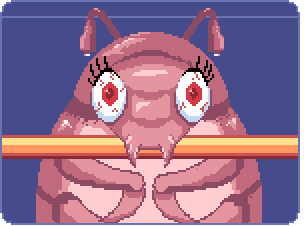
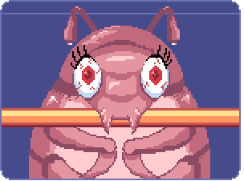

collage
Assemblage has informed this inquiry both conceptually and in method. Within my practice, the grouping and juxtaposition of imagery that collage provides unveils hidden questions and ideas. In this project, the method of collage runs further than that: I am interested in what happens when we take things apart and paste them back together again in order to breathe life into an idea. Over the course of this project, I have made paper collages and web-assemblages, I have gleaned words and articles and pictures and made them into case files, I have stuck AR bugs over the human body. So it seems only right that my final piece unites the eclectic nature of my experiments through a video game. The act of making a video game is assemblage, it’s cutting and sticking pieces of code, narrative and art together in a way that is interactive, playable. In this case, it allowed me to reject the corporeal body by placing the user into a body of my choosing, into a world of my creation. I am the witch who turns the prince into a frog, or rather a beetle.
 

The insect in the game lives in a world of assemblage, amongst huge unblinking human eyeballs and flashing electricity and magical hardware. Pixels act as a glue, they knit all of these contradicting elements together into a world that constructs a metaphor for gender bias in technology. The motifs of the game become inseparable in this setting, mirroring the hardware behind a video game. “A console. A screen. A controller. A player, power supply, electricity. And yes, a game. None of these can perform their intended function unless connected one to the next as an assemblage.” (Reinhard, 2017). This quote utilises the DeLanda (DeLanda, 2016) theory of Assemblage which builds upon Deleuze and Guattari (1987) definition of the term which emphasises the rejection of unity in favour of multiplicity. (Nail, T. 2017) This idea of multiplicity seemed perfectly fitting when considering the ideas surrounding the body in digital spaces. Dianne Currier considers how this method of thinking can translate to feminist technology, using Harraway’s theories on Cyborg Feminism to imagine how assemblage might allow us to think about the meetings of bodies and technologies beyond binary oppositions (Currier, 2003).
By using the principles of collage, we can begin to speculate on how we may be able to change how we design technologies by cutting and pasting people from different backgrounds and disciplines together to create. An instance of this lies within the research agency Forensic Architecture. Composed of architects, software developers, filmmakers, investigative journalists, scientists, and lawyers, the agency works to “investigate state and corporate entities [] for their violent acts.” (Forensic Architecture, 2024) Their work is often used in legal processes and is an excellent example of what can happen when we use collage to build teams. By arranging artists with engineers and poets with data analysts, cutting and pasting women into spaces where they should have been all along to create a digital utopia: A space for everyone to breathe, to glitch and change and refuse, to cut, stick and paste in a place where they feel seen.
Consider for example, Legacy Russel, the author of the manifesto Glitch Feminism. Russel is a Black writer who spent their adolescent years on the internet, trying on the different skins of the people that they couldn’t try on in the real world. By disregarding the corporeal body, they used the digital environment to learn what the world looked like through the eyes of people with different skin tones and gender identities. There is an element of play that is prevalent in this. The enactment of different ways of being harks back to the physical play that we experience as children, playground games of pretend. Russel reflects on this practice, saying that “Experimenting by donning different ‘skins’ becomes an act of empowerment, self discovery and even self care.” (Russel, pg 108) But how about in adulthood? Can we use video games as methods of feminist play?
I used this project to consider how feminist digital interventions can be used as weapons against a landscape of algorithmically perpetrated sexism. Identity is an integral part of the human psyche, and is something that the role of gender has a hand in moulding and manipulating. Mark Zuckerberg was once recorded stating that ‘You have one identity…The days of you having a different image for your work friends or co-workers and for the other people you know are probably coming to an end pretty quickly…Having two identities for yourself is an example of a lack of integrity.’ (Kirpatrick, 2010). Which is a concerning ideology if one begins to consider the importance of being able to shift identity for people who are not straight, white and male. In spaces which are not safe, we temporarily adopt identities which allow us to navigate in a fashion that is more acceptable, we tone down assertiveness or become more guarded in spaces where we are at risk. To object to this self-constructed camouflage as a lack of integrity disregards the gendered and racial expectations of identity.
The practice of tailoring digital identity is articulated well by the term online identity reconstruction. This has been defined as the act of building online identities through which one changes or hides certain characteristics (Hu et al, 2015). The act of changing and hiding characteristics online holds a survivalist mentality in a similar way to interactions that take place in real life, identity reconstruction often becomes a way to ensure the presented identity matches [their] different goals in social network communities. (Hu et al, 2015) It is important however to recognise who is in control of these goals, how many of them are formed by an aspiration to conform to the environments that we find ourselves in? And how many of these environments have been built on structures which do not take large demographics into account through design?
Alfie Bown confronts these issues in his series of essays about the political dynamics of online romance titled Dream Lovers. Bown argues that “When we are turned into digital objects, when we are ‘datafied’, we have identity politics structurally imposed. To break this pattern, we need a different approach to data and how we use it” (Bown, 2022). I wonder whether the problem resides in data or in the precursor to the data: the attitudes that we have perpetrated onto the intersection of identity and gender for years. As our physical personhood begins to fuse with these platforms, I want to make people aware of alternate ways of breeding creative ingenuity as a form of resistance in technology.
Ingenuity can be defined as “Inventive skill or imagination; cleverness.” (‘Ingenuity’, 2016), it is this element of imagination that I think is important to emphasise when considering how we can resist sexism in digital spaces. Through ingenuity we can begin to construct more emotional and extreme ideas of perspective digital futures, allowing for a more considered approach to thinking about how what we design now will affect different people in the future. The science fiction genre allows us to explore these scenarios in a way which is accessible for the masses, exemplified by Margaret Atwood’s The Handmaid's Tale (1985). We see this in campaigns surrounding abortion rights, the red-cloaked figures holding signs have become a staple of our portrayal of the war on women’s bodies. Yet this visual didn’t exist until the 1985 release of The Handmaid’s Tale which envisions a society, scarily close to our own in which women have become completely powerless.
I first read The Handmaid’s Tale when I was sixteen and I devoured it. The role that narrative had in expanding my understanding of gender dynamics continues to influence my practice as a designer through writing. Creative writing can be considered a form of collage, it allows the writer to construct new worlds and scenarios by placing story next to actions and characters. Through this method of patchwork, I have found myself confronting uncomfortable pasts and futures, however, through analysis of these worlds I have learned how to look at our current climate critically. By laying subjects out flat through play, I began to consider and rearrange how we can look at gender and the body in a more optimistic light.
Themes surrounding assemblage and the body can be exemplified by the science fiction genre. The film Poor Things (Lanthimos, 2023) informed the direction of my inquiry. Poor Things is a movie about a woman who is brought back to life with her babies’ brain inserted into her head. The notion of a baby's brain navigating an adult's body in an adult world acts as a surreal collage, allowing elements of the world that has been created in the story seem intensely more cruel, wondrous and interesting than they might have been through an adult's lens. The development of Bella’s identity holds a mirror to the audience, her innocence allows us to question the world through her eyes. The effect of this is a more empathy led approach to considering societal problems through worldbuilding. The influence on my work has been instrumental in how I use strange and delightful narratives in order to question feminist issues.